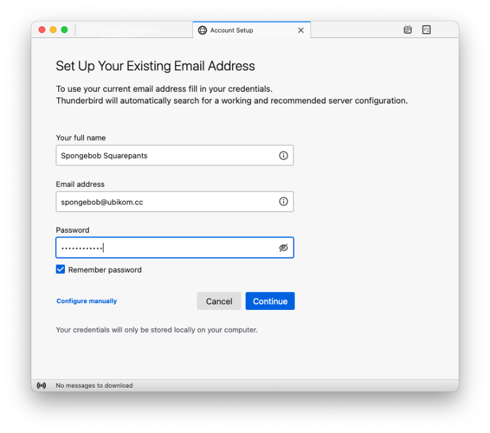
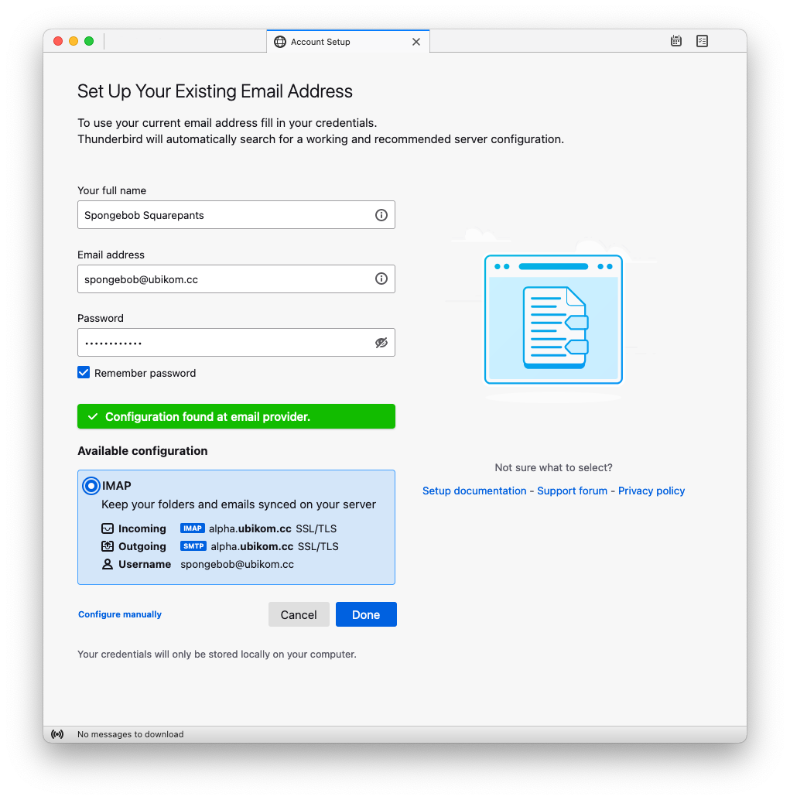

From the identity details page, you must have at least the following:
If your client does not support automatic configuration, you will also need these:
Thunderbird is one of the best email clients supporting all major desktop platforms, including Linux. It's easy to configure Thunderbird - all you need to do is enter your email and password. You can download Thunderbird here.
When you open Thunderbird, you will be asked to set up an account (or you can do it at any time by selecting File, New, Existing Mail Account from the menu).

Enter your name (as it will appear to email recipients), email address and password. Click "Continue".

The account will be configured automatically. Click "Done".
Windows Mail is included in Windows 10 and 11 (maybe older versions as well).
Open Windows Mail (you can search for Mail in the search bar). Once there, click on the settings button in the bottom left corner of the window. Then, click "Manage Accounts", "Add account".
In the list of account types, chose "Other account POP, IMAP".
In the next screen, fill in the form as follows:
Now, you should see "Internet email account" screen where you can specify your account options.
You can use any email client that supports IMAP (or POP3) and SMTP, which is virtually all of them! Check out the instructions for setting up a generic client.
If your setup doesn't work, double-check your settings. You might want to delete this account completely and try to set it up again.
Check the list of known issues here. If you think you have found a bug, submit a new issue, or email lgx@ubikom.cc.